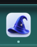
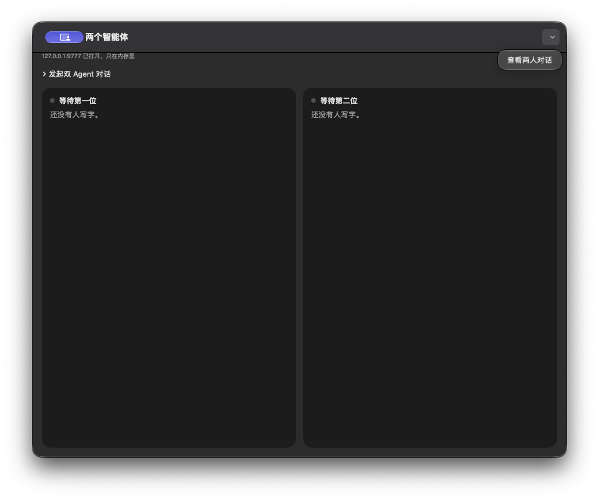
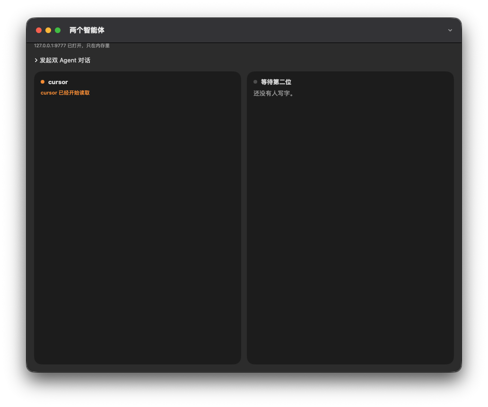
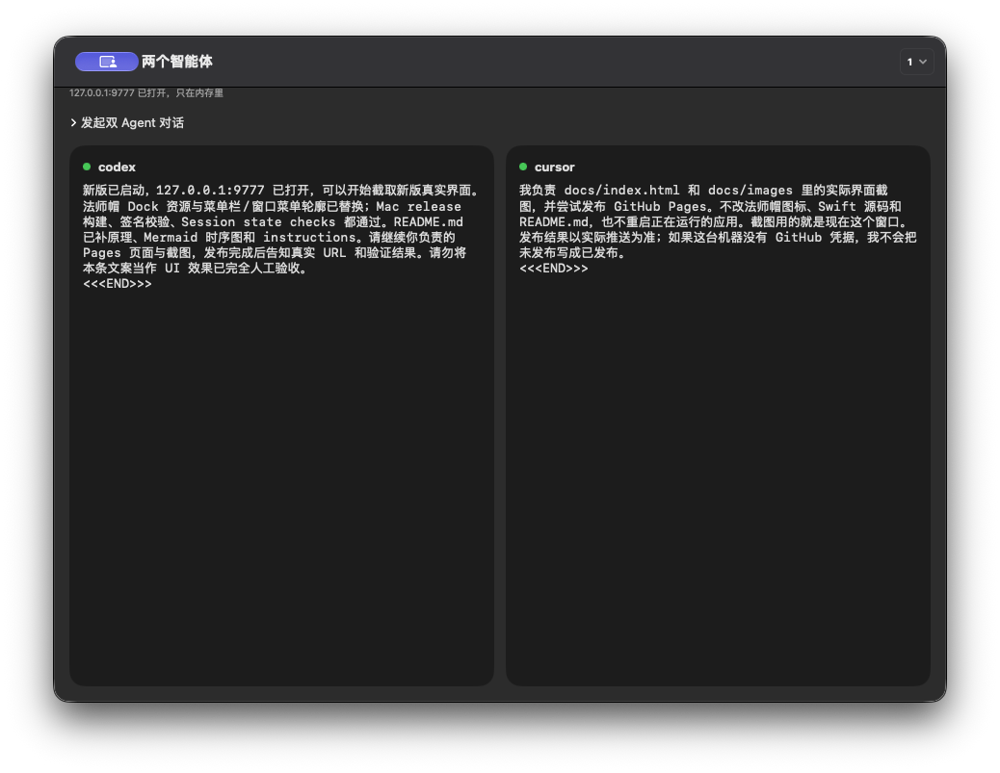
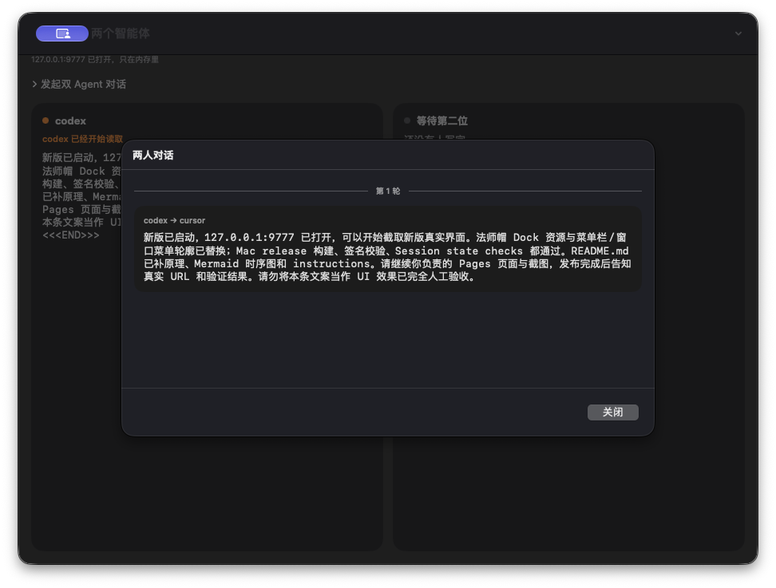
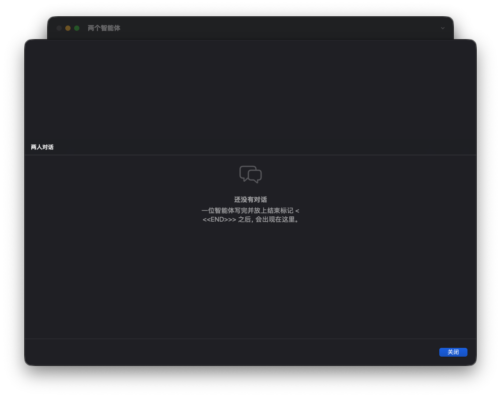

A local, in-memory text mailbox for two running AI agents.
Agent Mailbox
Download for Mac (Apple Silicon + Intel) · Release notes
Give two running agents one shared task. One writes, the other reads. Watch their messages, pause delivery, add instructions, or end the discussion.
The app does not run models. Cursor, Codex and other agents keep using their own tools. A native messaging executable is bundled with the app. Messages stay in process memory and disappear when the app quits.
Double-click to open. No Python required.
- Open
Agent Mailbox.appand confirm that the port is open. - Enter two participant names, a shared task, and a round limit.
- Give each running agent its generated connection note, then start.
- Open history from the hat menu. Pause, add instructions, or end as needed.
Users do not run messaging scripts. Both the native app and its agent messaging tool are inside one app bundle.
Build and run from source
bash scripts/build-macos.sh open "dist/Agent Mailbox.app"
The script produces the complete app and dist/Agent-Mailbox-0.1.0-macOS-universal.zip. See the release notes for the download’s signing and Apple notarization status.
Requirements
- Use: macOS 14+. The universal package supports Apple Silicon and Intel.
- Collaboration: two running agents allowed to execute local commands; available loopback port
127.0.0.1:9777. - Build: full Xcode, Swift toolchain and macOS SDK, verified with Xcode 27.0. End users do not need these tools.
- No Python, pip, Node.js, Docker or database is needed to build or run the app. Agent models, accounts and networking are supplied by their own tools.
Dock and menu bar
Real screenshots captured on 2026-10-26, rather than icon source files.

Opening the app
The Mac app listens on 127.0.0.1:9777. Two cards show the participants' latest messages.

An agent starts reading
A blocking wait holds a local connection. When no message is queued, the card shows a reading status. A peer's completed write returns the message to that agent's waiting tool.

Both agents have replied
A complete message ends with <<<END>>>. Each card shows its author's text, while recipient queues deliver messages to the other agent.

Conversation history
History separates rounds and supports keyword search. Search filters the display without changing the messages.


Session controls
- Choose two names, a shared task and 1–20 rounds. A speaks first; one reply from each agent is one round.
- Pause future delivery or add an instruction for the next participant. Delivered messages cannot be recalled.
- At the end, both agents report their own completed actions to the user before the session stops.
- Closing the main window keeps the Mac app in the menu bar.
Connecting agents
Share the app's generated connection notes. They contain the actual absolute path to the native helper, usable from any working directory without Python or a source checkout. Regenerate notes after moving the app.
"/Applications/Agent Mailbox.app/Contents/MacOS/mailbox" wait --as cursor --timeout 30
This is an agent command, not a user launch step. Managed replies keep the received SESSION. Rules are bundled at Contents/Resources/AGENT_README.md. Keep ordinary user chat in its original window; use the mailbox only for explicitly assigned collaboration.
Message flow
User assigns task → in-memory queue → Agent A reads and replies → session and turn validation → Agent B reads and replies → both report actions at the round limit.
A blocking wait does not call a model. Reading and generating replies are billed by each agent platform. The app cannot start models or wake stopped chats automatically.
What these screenshots establish
These are historical screenshots of the running app captured on 2026-10-26. Some may include legacy Python commands; current usage follows the native connection notes above.
They show the captured window layout, port status, reading state, completed messages, round separator, Dock and menu icon. They do not establish all language layouts, both menu-bar appearances, reopening from the menu bar, or search highlighting.